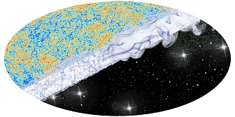
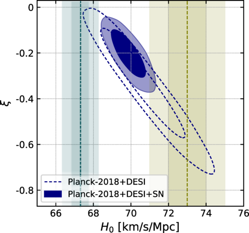
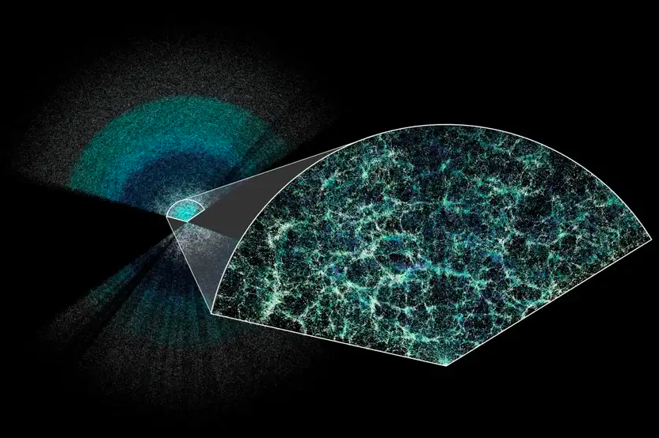

Media & Interviews
Interview in "Sociedade Brasileira de Física"
Interação no setor escuro pode resolver enigma na taxa de expansão do universo
By Roger Marzochi January 30, 2025 Official article link: SBF - Interview
|

Cover of "Interação no setor escuro pode resolver enigma na taxa de expansão do universo" ...“Uma novidade do nosso trabalho é que mostramos uma indicação estatística de que essa interação (entre matéria e energia escuras) pode existir com mais de 95% de confiabilidade estatística”, explica o cientista Rafael Nunes, professor adjunto do Departamento de Astronomia do Instituto de Física da Universidade Federal do Rio Grande do Sul (UFRGS), um dos autores do artigo “Interacting Dark Energy after DESI Baryon Acoustic Oscillation Measurements”, publicado em 18 de dezembro de 2024 na Physical Review Letters (PRL). Entre os coautores do estudo está o colombiano Miguel Sabogal, aluno de mestrado da UFRGS sob a orientação do professor Rafael Nunes. ...“Os nossos resultados estão baseados em dados do levantamento DESI (Dark Energy Spectroscopic Instrument), que está em seu primeiro ano de operação, com seis milhões de objetos extragalácticos catalogados. No entanto, daqui a cinco anos, esse número poderá chegar a 35 milhões. Por isso, esperamos, no futuro, obter resultados ainda mais precisos, que podem confirmar ou descartar o modelo LambdaCDM, caso não sejam detectados erros sistemáticos evidentes nos dados”, afirma Sabogal. ...Apesar dos desafios, poucas coisas são tão estimulantes quanto o ato de fazer o que se ama. “Eu estudo o Universo por uma necessidade de entender como ele funciona, para responder por que estou aqui. Desde pequeno, essa tem sido minha razão para estudar o Universo”, conclui o aluno de mestrado Miguel Sabogal. |
Research Coverage in "Astrobites"
So, how’s it going with the Hubble tension?
By Katherine Lee January 18, 2025 Official article link: Astrobite - Article
|

"A contour plot of possible values using IDE for both the Hubble constant and the coupling parameter ξ between dark matter and dark energy, given only the Planck and DESI datasets (dashed contours) and including data from type 1a supernovae (solid contours). Green vertical bounds show H0 as measured by the SH0ES collaboration using only supernovae, and blue vertical bounds show H0 measured by Planck using only the CMB. Modified from Figure 1 in today’s paper." ...In normal ΛCDM cosmology, we think that the energies of dark energy and dark matter are conserved separately–in other words, the total amount of energy (or momentum) contained in dark matter hasn’t changed since the Big Bang, and neither has the amount of dark energy in the Universe. Today’s authors, though, take a different tack. They consider a model called Interacting Dark Energy (IDE), in which dark energy and dark matter are allowed to interact with each other, transferring energy and momentum from one to the other. Rather than dark matter and dark energy being conserved separately as in ΛCDM, then, the total amount of energy contained in both is conserved. This new model adds a seventh parameter to the six that are standard in the ΛCDM model, a parameter which describes the amount of energy that’s transferred between dark matter and dark energy. The authors can then use Bayesian statistics to find the values of the seven ΛCDM parameters that are most likely to have produced the cosmology we observe, using CMB data from the Planck mission, baryon acoustic oscillation (BAO) data from the Dark Energy Spectroscopic Instrument (DESI), and supernova data from the SH0ES collaboration... |
Interview in The "New Scientist" magazine
Invisible 'dark radiation' may explain a big problem with dark energy
By Leah Crane May 9, 2024 Official article link: The New Scientist - Interview Personal repository: My Repository - Interview
|

"A slice through the largest 3D map of our universe to date" by Laire Lamman/DESI collaboration ...Since the DESI data came out, researchers around the world have been working on ways to explain the apparent changes in the universe’s expansion rate. Dark energy is not directly observable, so there are several options that could fit. “There are many ways to potentially solve this – too many,” says Miguel Sabogal García at the Federal University of Rio Grande do Sul in Brazil. “Each one has its advantages.” One solution suggested by Sabogal García and his colleagues involves letting dark energy interact with dark matter a mysterious form of matter we can’t see and that is far more plentiful than standard matter. This interaction is forbidden by the standard model, but if energy could in fact flow from the universe’s dark matter to its dark energy – essentially converting the former to the latter – the researchers’ simulations showed that this would match the DESI measurements. However, the mechanism for sure an energy transfer is not yet clear. One upside of this solution is that it could also help resolve a long-standing cosmic dispute called the Hubble tension... |
Universidad del Atlántico – Academic Spotlight:
Nuevamente estudiante de Física de Uniatlántico pasante de Investigación en programa internacional
Coverage by Universidad del Atlántico’s official news portal. July 14, 2022 Official article link: Institutional Recognition
|
...El estudiante Miguel Antonio Sabogal García del Programa de Física obtuvo el reconocimiento a nivel internacional al ser seleccionado como uno de los pasantes en el “RECA Intership Program 2022”, siendo el segundo año consecutivo, que un estudiante del Programa de Física de la Universidad del Atlántico lo obtiene. Sabogal García, actualmente cursa el último semestre del Programa de Física fue seleccionado, dentro de un gran número de solicitantes y como uno de los Pasantes en el RECA Intership Program 2022, realizará la investigación titulada “Estimación de la Constante de Hubble a partir de señales de BAO con datos LSST simulados”, supervisada por el Dr. Javier González Sánchez (Universidade Federal de Sergipe, Brasil)... |